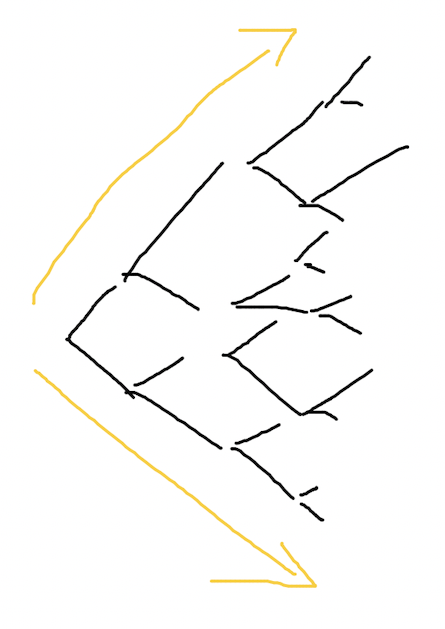
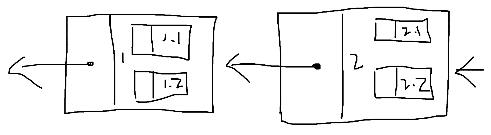

A Multi-Linked-List-Based Blockchain Idea
Is it possible for a blockchain to move beyond a purely linear structure into a graph-like data structure with multiple links—say, evolving from a singly linked list to a multi‑linked list? If we assume a multi‑linked list form, what changes would it bring to a blockchain—or is it even feasible?
First, a forward (outward‑branching) multi‑linked list, like this:

Then, a backward (converging) multi‑linked list suited for blockchains, like this:

For a multi‑linked list, one variant fixes the number of successors (e.g., exactly 2 child nodes per node). Another allows a variable number of successors—each node can point to any number of children. The difference between the two is minor.
Another fork in the road is whether to retain the concept of block height. Block height indexes block order and plays an important role in synchronizing data across nodes. In a multi‑linked list, if we define block height by tree depth, it would look like this:

Alternatively, we can define it by the order in which blocks are written—that is, the initial label implies block height:
For blockchains, verifying data integrity is critical. When there’s only one child per node, other nodes can easily sync a block’s data and validate it via hash values. In a multi‑linked‑list scenario, validating a block becomes more complex—but not unmanageable. You simply repeat the original “validate one block” operation multiple times in a loop to verify more links.
The key difference between forward and backward multi‑linked lists is this: one diverges outward, so each higher level contains more nodes—growing exponentially. The other converges, so the number of nodes per level decreases until only one remains. In other words, a right‑side‑up tree versus an upside‑down tree.
Blockchains have a genesis block. In a forward multi‑linked list, the genesis block remains singular, but as children expand, things become increasingly hard to control. If we keep block height, there’s no fundamental reason it couldn’t work—beyond some extra steps in the program. If we drop block height or replace it with an index, blocks can still be produced one by one; there’s no technical impossibility, though the handling remains essentially chain‑like. Simply switching the data structure from a linked list to a multi‑linked list doesn’t seem to offer clear benefits, because it’s hard to imagine what advantages it would bring.

With a backward multi‑linked list, there’s a big question: what about the genesis block? In an upside‑down tree, the number of children shrinks and finally becomes one. Would the genesis block then have to specify a large initial number of nodes that gradually converges to one? That’s unreasonable—equivalent to hard‑coding a halting condition: once a certain block height is reached, you can no longer append content. Clearly undesirable.
Because tree structures either diverge or converge, the multi‑linked‑list idea runs into problems. So how about this: use parallel multi‑linked lists—would that work?

Since you’d need multiple inputs and outputs—and the counts must match—this uses repeated pointers to achieve that.
Again, it’s technically feasible. The question is: what’s the benefit? What does this data structure actually bring—beyond extra program complexity?
Well, there is one thing: this structure allows producing two blocks at the same time. As long as two nodes use the same parent, even if they’re simultaneous with no ordering, both can be appended as children.
But then more problems arise. How do we prevent double‑spending? If the same account’s transactions appear in both blocks, which one wins? In distributed systems, synchronization is ultimately a process of many points becoming one. Even parallel programs face resource contention. After producing two blocks simultaneously, you still need some single‑point mechanism to process the data; producing simultaneous blocks becomes meaningless and doesn’t speed up the system’s overall throughput.
Moreover, a “parallel” multi‑linked list can essentially be viewed like this:
Seen this way, parallel multi‑linked lists make even less sense.
All in all, is it possible for a blockchain to be based on a multi‑linked‑list data structure? It seems unnecessary. A singly linked list is simple, yet it truly fits a blockchain’s needs.
Background
Singly Linked List

A singly linked list is a linear data structure. Each node contains a field that points to the next node, explicitly representing relationships between nodes. In programs, this field is usually filled with the referenced object’s address. (You could also use the node’s value directly, but separating by type is clearer.)
type Node struct {
Value int
Next *Node
}
func main() {
node1 := Node{Value: 1}
fmt.Printf("%p\n", &node1) // 0x14000104210
node2 := Node{Value: 2}
fmt.Printf("%p\n", &node2) // 0x14000104220
node1.Next = &node2
fmt.Println(node1) // {1 0x14000104220}
fmt.Println(node2) // {2 <nil>}
}
node1’s memory address is 0x14000104210, and node2’s is 0x14000104220. Assign node2’s address to node1’s next field. At that point, accessing node1 lets you reach node2 via next. By extension, even with many nodes, knowing only the starting node node1 lets you traverse all nodes in the linked list.
Doubly Linked List

A doubly linked list adds one more field on top of a singly linked list to store a pointer to the previous node. With this structure, when you access any node, you can learn both the next and the previous node.
type Node struct {
Value int
Next *Node
Prev *Node
}
(Doubly Linked List) − (Singly Linked List)
A singly linked list retains information about the next node; a doubly linked list keeps both previous and next. Is there a data structure that keeps only the previous node? For example:
type Node struct {
Value int
Prev *Node
}
Why build a linked list that retains only the previous node? Because there’s a scenario where, when creating the current node, the next node’s content and reference address are not yet determined—or don’t exist.
Once the next node is determined, should we modify the previous node? It’s easy to change in a demo, but what about in a massive database? Update costs are high. And in a distributed system? Network I/O and consistency add even more cost.

This structure might not be bad: it preserves the essence of a linked list while allowing the list to grow without altering prior nodes’ data. The traversal order, however, is the reverse of a singly linked list—you must traverse from the last node backward to visit all nodes, as if the singly linked list were flipped. But a flipped singly linked list is still a singly linked list.